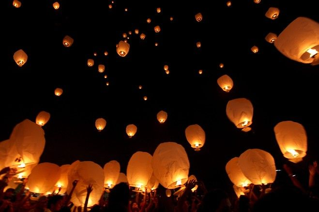

"Celebration of Tazaungdaing Festival"


As Tazaungdaing festival is well-known as “Festival of light”, Myanmar people usually take part in the celebration by lighting up or hanging the colourful light bulbs, lanterns, candles around the houses, on the balconies and on the floor of many pagodas to alter Buddha brightly just like in these pictures. People also celebrate by releasing the hot air-balloon into the sky as an offering to the heavens to drive away evil spirits in Buddhist and Hindu cosmology which is similar to the Loi Krathong festival in Northern Thailand. Besides, people offer alms, candle lights, joss sticks, flowers and fruits as homage to the pagodas,alm-offering for monks and Satuditha meal serving for people as part of merit-making on the full-moon day of Tazaungdaing as well. Young people pay homage to elders (gadaw) and visit pagodas and do the merits during the festival. Many live concerts and other famous festivities, such as traditional dramas like the Yama Zatdaw, are also held between Thadingyut and Tazaungdaing!
There are also some famous festival activities which are held during Tazaungmone month.
1. Robe-weaving competition(Matho Thingan)
On the full-moon day and eve of full-moon day, pagodas throughout the country are crowded with Buddhist devotees and pilgrims to watch one of the well-known traditional activities called robe-weaving competition which is also known as Matho Thingan competition. As the rule of competition, contestants have to weave the decorative yellow monk robes(Matho Thingan) constantly from the night until the dawn for Buddha statues and the team who weave the best and the most beautiful robes are announced as the winners. Normally, it’s very crowded in many pagodas to watch the competition and sometimes it’s included Myanmar Traditional orchestra like drum, Sain and dance performance for the audience and contestants to be more enjoyable and entertaining.
2. Ka Htein Festival( Kha Htein Khin)
Another famous festival activity is “Ka Htein Festival”which is also called Kha Htein Khin. It’s one of the traditional festivals which offers monk robes to Buddhist monks by bringing tree-shaped moveable stands, where varieties of offerings and gifts are hung, to the monasteries. This festival begins on the first day of Thadingyut till the full-moon night of Tazaungmone.It’s also accompanied with the Myanmar traditional orchestra bands playing the music with loud sound boxes along the way to the monasteries which are very thriving and merry. It usually tours around the city so many of the people go and watch it as soon as they hear the sound of its music.
3. Taunggyi Hot Air-balloon Festival

Taunggyi hot-air balloon and fireworks-launching competition is also a significant one among the Tazaungdaing traditional festivals in Myanmar which basically lasts for 6 or 7 days. Balloons are beautifully decorated and designed with the form of pagodas, Buddha, dragons, the title of Festival and even elephants. Sometimes, bigger balloons are attached with fireworks and its explosion in the sky at night is very gorgeous and unforgettable.Normally, the festival ends on the full-moon day after the announcement of the balloon contest’s winner. Nowadays, it’s even more vibrant and famous when it’s combined with the funfair and spectacle which is also broadcasted in television. Even more lively is that there are also live concerts, plenty of food and soft drinks in stalls or for free.However, it can be sometimes dangerous for the visitors and because you can be injured or even killed by the firework drop down from the hot-air balloon to the crowd accidently. But it’s really rare so just be vigilant and aware when you visit there.

|
There is also a custom celebration called "kyimano pwe" which means “Don't wake the crows up". On that night of full-moon day, young men usually steal things or trick neighbours just for fun.
As a part of Burmese tradition, we also pick Siamese cassia buds and prepare it in a salad called "mezali phu thoke" which is usually boiled and seasoned with sesame, groundnut, fried garlic and other ingredients.Burmese people believe that it has amazing medical benefits if we pick and eat it on Tazaungdaing full moon midnight so families usually prepared as a salad and have tastefully at midnight of full-moon day. |
|
|---|
|